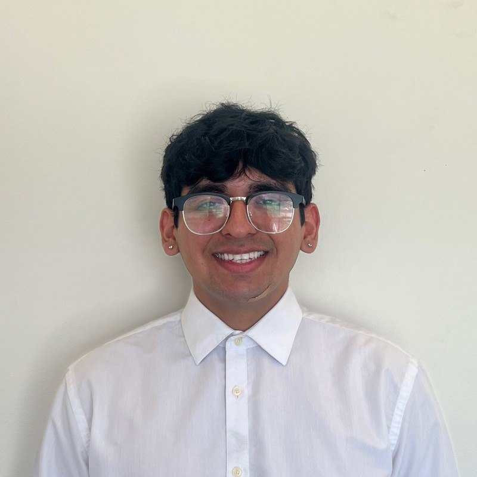

Sagar Dhunna's Resume

Contact Me
Summary
Organized and dependable team player with a positive attitude and ability to manage multiple priorities. Ambitious and passionate about becoming a software engineer, eager to develop skills in programming, data analytics, automation, and machine learning. Open to constructive criticism to improve performance and meet team goals.
Education
- Cypress College | 4.0 GPA | Cypress, CA | AS Mathematics | May 2024
- John F. Kennedy High School | La Palma, CA | High School Diploma | May 2022
- Pending Transfer to a Four-Year university for Fall 2024
Skills
- Technical Skills: Proficiency in Microsoft Office, C++, Python, Java, HTML
- Soft Skills: Time-Management, Strong Work Ethic, Task-Driven Team Player, Exceptional Communication
Work Experience
-
Research Assistant | Cal Polytechnic University Pomona | Pomona, CA | Summer 2023
-
Led a team of three under esteemed Dr. Hao Ji's guidance to generate annotated image data using 3D models for custom object detection training
- Presented research poster at Cal Poly Pomona's Annual Research Symposium
- Engineered a tailored 3D reconstruction workflow, ingeniously utilizing a combination of cutting-edge tools to bring intricate 3D objects - Post-Processing in Reality Capture & Blender
- Employed a pre-existing Unity pipeline to develop synthetic data in COCO format
- Developed custom object detector by training a machine learning model in Roboflow
- Achieved promising metrics, 66.1% mAP, 77.7% precision, and 62.0% recall
-
Outreach Ambassador | (STEM)^2 Program | Cypress College | June 2023 - Present
- Collaborated with a team to meticulously organize, plan, and actively participate in events for 400+ program members.
- Conducted 10+ outreach presentations aimed at educating both new and existing Cypress College students about the STEM^2 program, highlighting its valuable benefits and resources
-
Sales Advisor | Best Buy | La Habra, CA | June 2022 - Present
-
Achieved remarkable results within three months of joining the position, elevating my membership conversion rate from 25% to an impressive 90%
- Consistently recognized by management for my performance
- Successfully cultivated strong connections with customers, fostering repeat business and increased sales
Accomplishments
- President's Honor Roll Fall 2022
- President's Honor Roll Spring 2023
- President's Honor Roll Fall 2023
- Certificate of Recognition from California Legislature
Hobbies
Going to the gym | Reading Self-Impprovement Novels | Spending time with Friends/Family/Dog | Living Life